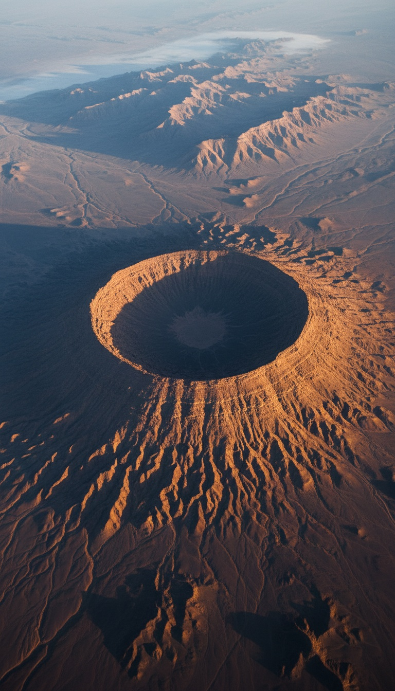

In the middle of the Sahara desert sits a perfect circle, fifty kilometers wide, visible from space, and when you convert the measurements Plato wrote down in 360 BC, the circle matches his description of Atlantis to within three percent.
Geologists filed it under natural formation and moved on. That filing decision, made from photographs and rock samples, is the only thing standing between the Richat Structure and the most famous lost city in human history. Because everything else lines up. The rings. The numbers. The mountains to the north. The water that used to be there. The date it disappeared.

The Eye That Opened From Orbit
In June 1965, astronauts James McDivitt and Ed White looked down from Gemini 4 and photographed a bullseye stamped into the western Sahara. The Richat Structure, in the Adrar region of Mauritania, is a set of concentric rings so vast and so regular that no one walking through it at ground level had ever recognized what it was. It took leaving the planet to see it. NASA has used it as a landmark for orbital navigation ever since, and the local name for it tells you the shape was always understood by the people who lived beside it: Guelb er Richat, the Eye. A structure you can only comprehend from space, sitting in a desert that was once green, ringed like a target. That is where this starts.
Plato Was Not Writing a Myth. He Was Citing Records.
Read the actual texts. In the Timaeus and Critias, written around 360 BC, Plato does not present Atlantis as a fable. He presents it as a records transfer. The Athenian statesman Solon traveled to Sais in the Nile Delta around 590 BC and sat with the priests of the temple of Neith, who told him their written archives went back thousands of years further than anything the Greeks possessed. The priests told Solon the story of a power that existed 9,000 years before his visit. Do the arithmetic. Nine thousand years before Solon lands you at roughly 9,600 BC. Hold that date. It comes back later, and when it does, it arrives with glacial meltwater behind it.
The Numbers Line Up to Within Three Percent
Plato gives measurements, and this is where the story stops being interpretation and becomes arithmetic. In the Critias he describes a central island surrounded by alternating rings of water and land, with an outermost wall whose position works out to a total diameter of 127 stades. The Greek stade Plato used runs about 185 meters. Multiply it out: 127 stades is 23.5 kilometers. The central ring complex of the Richat Structure measures 23.5 kilometers rim to rim. The full structure, with its outer ring features, spans close to 50 kilometers, matching the scale of the fortified plain Plato describes around the city. The deviation between the text and the satellite measurement is under three percent. Plato also wrote that the city was sheltered by mountains to the north, famous for their size and number. Stand at the Richat and look north. The Adrar highlands rise exactly where the text puts them.
A Greek philosopher wrote down a diameter in 360 BC. A NASA satellite confirmed it in the Sahara to within three percent. And no archaeologist has ever put a shovel in the ground there.
The Water Was There, and Then It Wasn't
The standard objection writes itself: Atlantis sank into the ocean, and the Richat sits in the driest desert on Earth, 500 kilometers from the coast. That objection dies on the timeline. During the African Humid Period, which climate scientists date from roughly 12,000 to 5,000 years ago, the Sahara was not a desert. It was grassland, lakes, and rivers, and we have the receipts. In 2015 a team led by Charlotte Skonieczny published radar imaging in Nature Communications revealing the Tamanrasset, a buried ancient river system in Mauritania that ranked among the largest drainage networks on the planet, running toward the Atlantic. Cave paintings at Tassili n'Ajjer in Algeria show swimmers, cattle, and hippos in the middle of what is now open sand. And 12,000 years ago the global sea level sat 120 meters lower than today, which means the Atlantic coastline of Mauritania extended far out across what is now seafloor. Plato said Atlantis was in the Atlantic, beyond the Pillars of Heracles. Mauritania faces the Atlantic. When the ice sheets collapsed and Meltwater Pulse 1B drove the oceans upward around 11,600 years ago, coastal lands drowned worldwide. That date, 11,600 years ago, is 9,600 BC. It is the exact date the priests of Sais gave Solon.
Herodotus Named the People
Plato is not the only classical source pointing at northwest Africa. A century before him, around 430 BC, Herodotus wrote in Book IV of the Histories about a people living in the interior of Libya, which was the Greek name for all of Africa west of the Nile, near a mountain the locals treated as a pillar of the sky. He recorded their name: the Atlantes. Not a metaphor, not a poetic flourish, a named tribe with a named location in northwest Africa, written down by the man historians call the father of history. Herodotus also mapped a chain of inhabited oases running ten days apart across the interior of the desert, meaning the Greeks knew the deep Sahara held people, water, and cities of some kind. When two independent Greek sources a century apart both anchor an Atlas-named people to the same corner of Africa, the word coincidence starts doing more work than the evidence does.
Nobody Ever Dug
Here is the part that should bother you most. The Richat Structure has never been archaeologically excavated. Not once. The French naturalist Théodore Monod surveyed the region in the mid twentieth century and collected Acheulean stone tools from around the structure, material that ended up in the collections of the Institut Fondamental d'Afrique Noire in Dakar. Later surveys confirmed dense scatters of ancient tools ringing the outer edges of the structure. Humans were there, in numbers, for a very long time. And yet every paper written about the Richat is geology. Uplift, erosion, an exposed dome. The dome explanation describes the rock. It does not explain why the rock matches a written measurement from 360 BC, why a superriver ran past it to the Atlantic, or why the habitation evidence wraps around its rings. Geologists answered the question they were asked. Nobody asked the other question. Mauritania's interior is remote, politically difficult to work in, and carries zero institutional prestige for a dig, so the trenches that would settle this have simply never been cut. The mainstream did not disprove the Richat hypothesis. The mainstream never tested it.
So run the ledger one more time. Concentric rings of land and water: on the satellite photo. A diameter matching Plato's figure to within three percent: measured. Mountains to the north: standing. An Atlantic location: on the map. Fresh water and a green landscape 12,000 years ago: confirmed in Nature Communications. A destruction date of 9,600 BC: matched by Meltwater Pulse 1B to the century. A named Atlas people in northwest Africa: written down by Herodotus. Against all of that stands one word, natural, assigned by researchers who were studying rocks, not ruins.
Sediment does not lie, and the sediment inside those rings has never been cored for a city. If there was ever a harbor cut into the outer ring, the channel scar is still under that sand right now, waiting. One trench would settle 2,400 years of argument. So the question is not whether the Richat matches Plato. You just watched it match. The question is why the one place on Earth that fits the most famous description in ancient literature is the one place nobody is allowed to call a candidate. Who benefits from the Eye staying closed? Say it in the comments.
Before you go
7 books the Vatican doesn't want you reading. Free PDF — the texts they cut, with sources. Joined by 140+ Inner Circle members.
No spam. Unsubscribe anytime.
Go deeper
The Hidden Canon, Vol. I — Enoch. Jubilees. Thomas. Mary. Judas. 90 pages, 14 chapters, every receipt cited. The books your Bible quietly removed.
Read the Canon →Books that informed this investigation
As an Amazon Associate, Hidden Epoch earns from qualifying purchases. Cost to you: nothing.
Research safely
The VPN we use to research without being tracked. First 3 months free.
Get NordVPN →